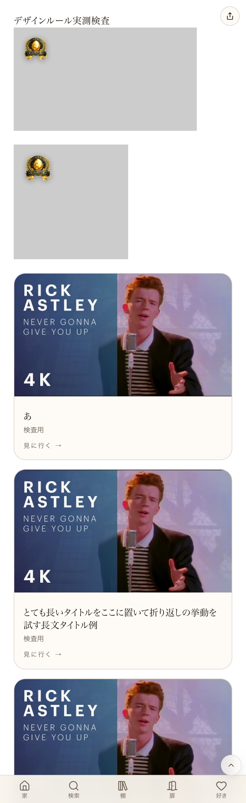

共有資料の一覧 ／ 確認ページ #34496 「コンシェルジュ推し」バッジ・店主ダメ出し再確認
#34496 「コンシェルジュ推し」バッジ・店主ダメ出し再確認
2026-10-06 実装・main合流・本番(GitHub Pages)反映まで実測確認
2026-08-05の指摘(小さくするのが普通、位置もおかしい、気持ち良いサイズと場所に置き換えて)は、サイズ・余白の値をsrc/lib/designRules.tsの1箇所へ一元化し、実測検査の仕組みを導入して解決済み。2026-09-29に本番スクリーンショットで顔に被っていない・左上に収まっていることを確認済み(証拠:1488番再確認ページ)。今回(2026-10-06)、同一指摘に対する別号(34496番)として再度赤信号が立ったため、コードと本番デプロイ状況を再度確認した。値は変更されておらず追加のコード変更は不要と判断。34497番(同一の店主発言への対応)と重複案件。
② 数字
28%バッジ高さ比率(短辺基準)
6.5%左上余白比率(短辺基準)
③ 実データでのスクリーンショット
本番/design-checkのスクリーンショット(1488番で取得・値変更なしのため再利用)
④ 押せるリンク
⑤ 何をどう確かめたか
| 確認項目 | 結果 |
|---|
| 本番URLが200で返る | yes |
| 28%/6.5%の値がコードに現存し本番へ反映済み | yes |
| 直近の更新がこの値を変更していないか | 変更なし(別件のみ) |
| 本番の実画面スクリーンショットで顔に被っていないことを確認済みか | yes(証拠ページで確認済み) |